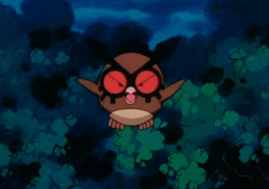

A Hoothoo Kft. egy közepes méretű, magyar székhelyű lokalizációs ügynökség, amely 1993 óta működik. A viszonylag kis szervezeti méretnek köszönhetően nagy fokú rugalmasságot és személyes ügyfélkapcsolatot tudunk biztosítani, mindazonáltal hozzáértő projektvezetőinknek és széles beszállítói ügyfélkörnek köszönhetően képesek vagyunk komplex és nagy volumenű munkákat is kezelni.
Dedikált projektvezetőink jól ismerik az ügyfelek igényéit és elvárásait, így a különböző kérdéseket és problémákat a lehető legnagyobb körültekintéssel tudják kezelni. Személyes megközelítés alatt azt értjük, hogy a projektvezető az Idő, Költségvetés, Minőség háromszögén túl mindig tisztában van az ügyfél számára szükséges apróságokkal is – azokkal a dolgokkal, amelyek derűsebbé tehetnek valaki számára egy napot.
Tudjuk, hogy minden vessző és kötőjel fontos – ezek azok az apró karakterek, amelyek képesek megváltoztatni egy szöveg stílusát és hangvételét, illetve a megjelenését és a róla alkotott benyomásokat. Ezért dolgozunk olyan fordítókkal és lektorokkal, akik nemcsak magasan képzettek, de egy-egy adott területre szakosodtak, és ezt a szempontot is figyelembe tudják venni. Büszkék vagyunk arra, hogy a feladathoz választjuk ki a legalkalmasabb partnert, így a fordítás a lehető legpontosabb lesz, a tartalmat és a stílust tekintve egyaránt – fordítóink a szöveghűségre törekednek, hacsak nem más az elvárás.
